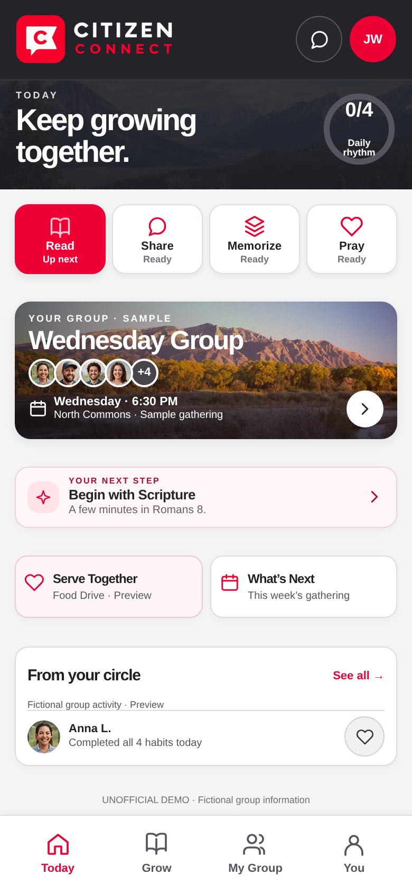
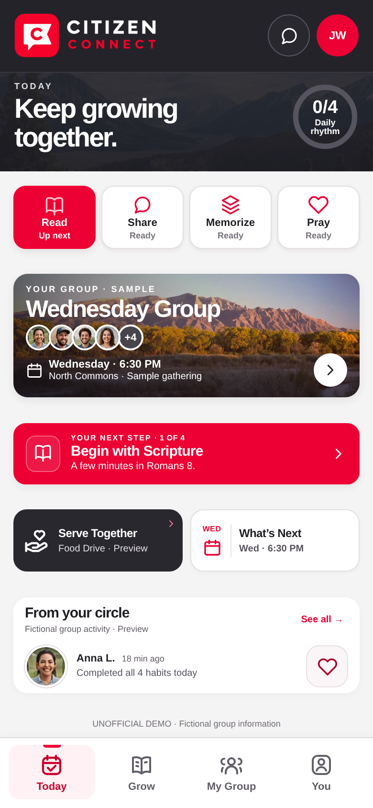
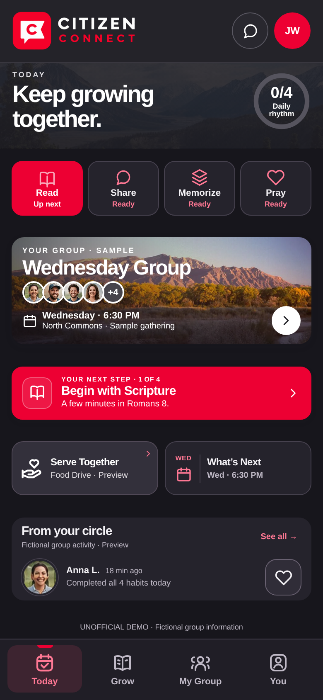
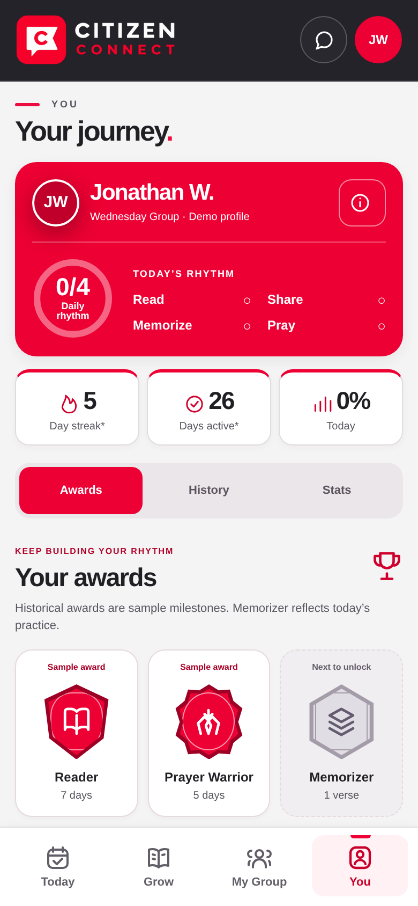
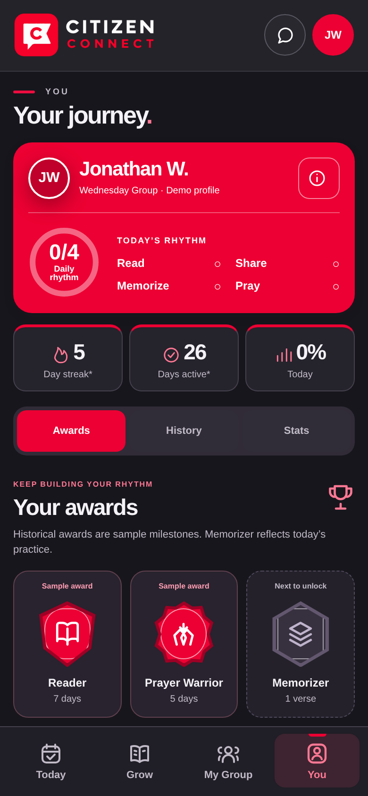
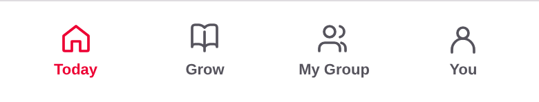
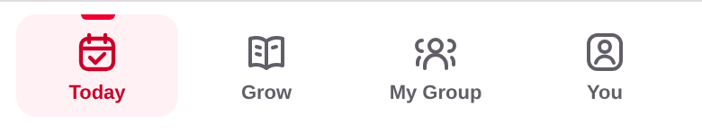

Citizen Connect v0.3.10
Premium engagement refinement. Both captures use a fresh demo at 390 × 844 CSS pixels, at the same scale. All members and activity are fictional.
Today · Before and after




Optional dark appearance
In the app, open You → Dark appearance. Your choice saves on this device. The original light appearance stays available.

Your journey · Refined
Citizen-red identity and original collectible award crests, in both appearances. The appearance switch now lives at the bottom under Demo controls.


Bottom navigation · Close-up


Unofficial prototype. Citizen branding remains provisional. No real messages or notifications are sent.